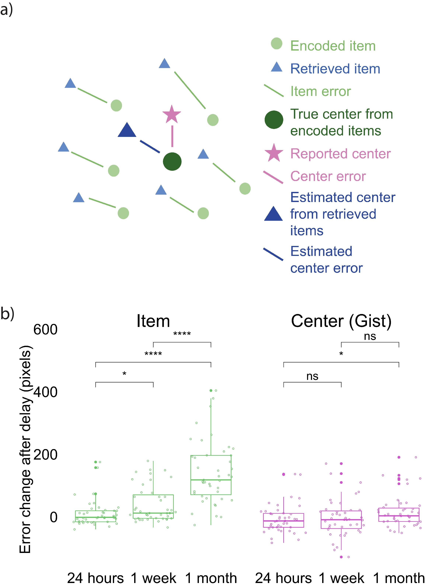
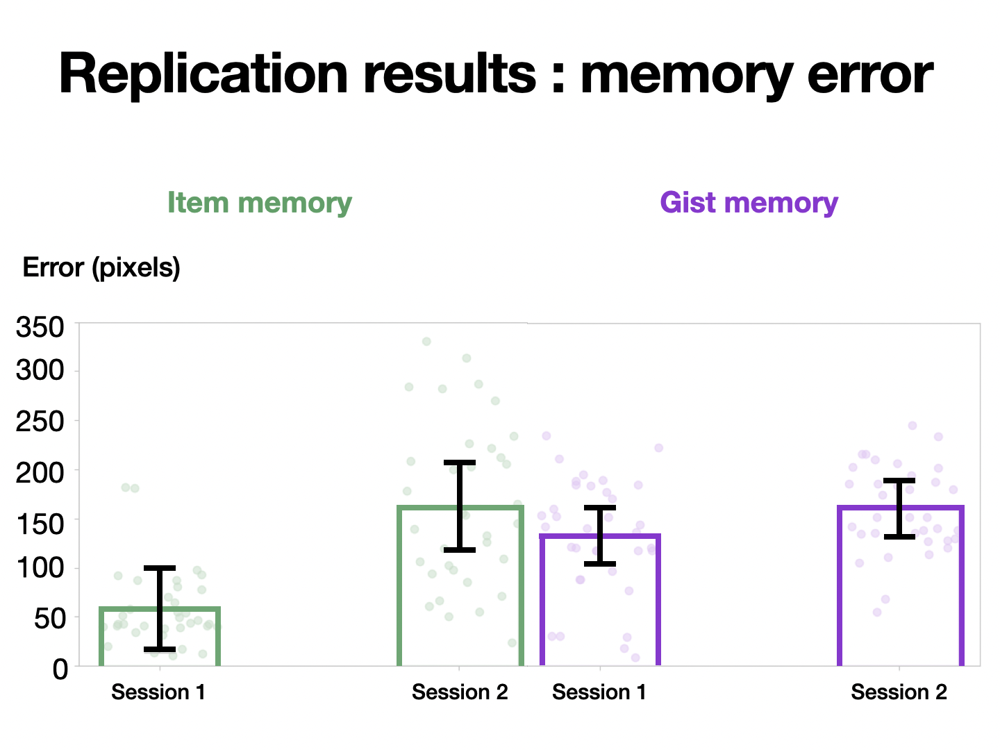
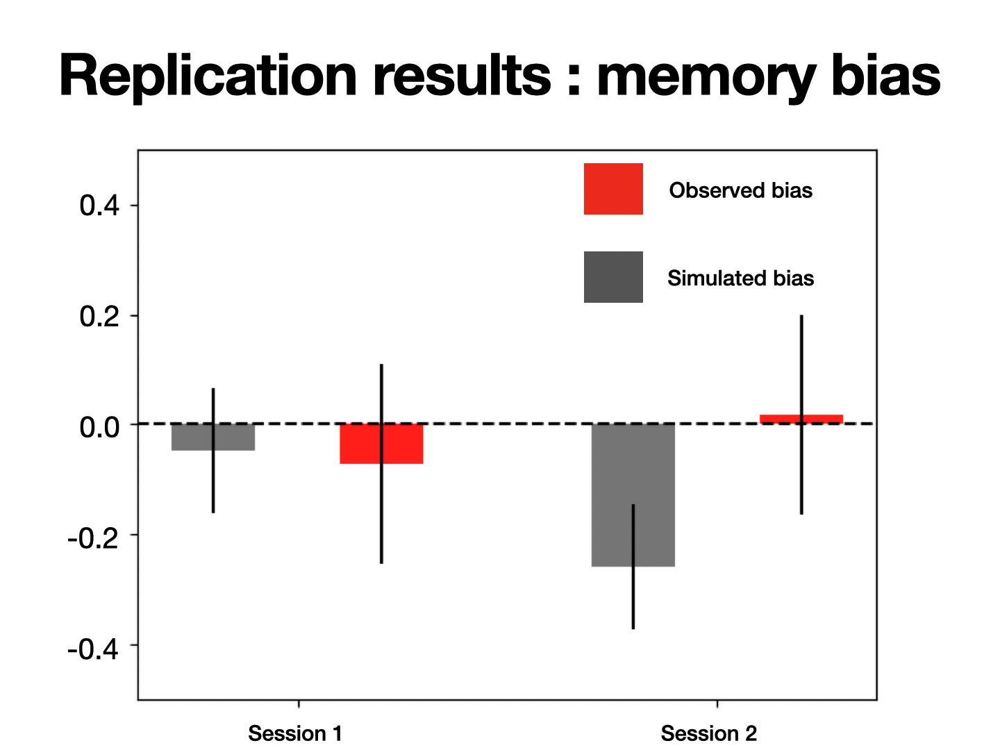
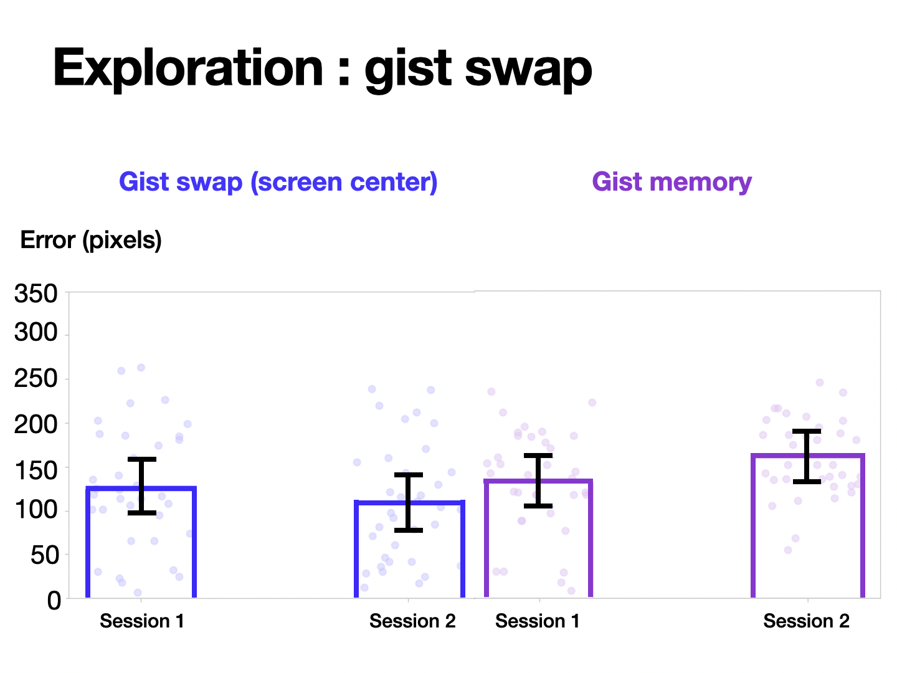
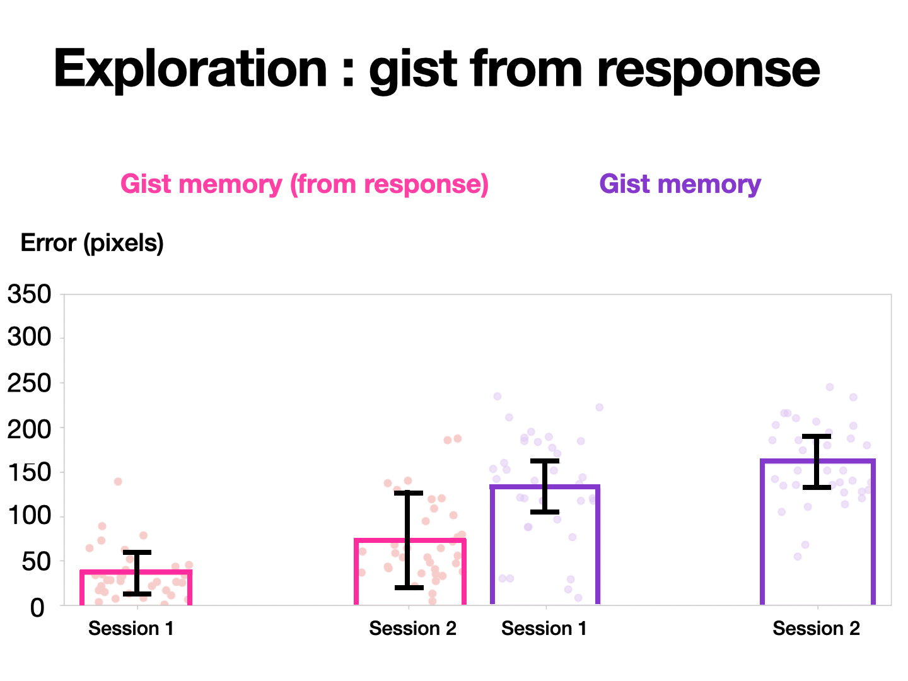

# Import python libraries
import numpy as np
import pandas as pd
import matplotlib.pyplot as plt
import scipy.stats as stats
import pingouin as pg
# Import dataframe
# Change path
datapath = '/Users/chattarinpoungtubtim/Zeng2021/analysis/all_sub_data.csv'
all_sub_df = pd.read_csv(datapath)
# Get data as numpy array
## Item memory errors for session 1 and 2
all_error_ind_s1 = all_sub_df['avg_ind_error_session_1'].to_numpy()
all_error_ind_s2 = all_sub_df['avg_ind_error_session_2'].to_numpy()
## Gist memory errors for session 1 and 2
all_error_gist_s1 = all_sub_df['gist_error_session_1'].to_numpy()
all_error_gist_s2 = all_sub_df['gist_error_session_2'].to_numpy()
## Gist response conditions for session 1 and 2 (is the response lie within the boundary)
all_good_gist_s1 = all_sub_df['good_gist_loc_session_1'].to_numpy()
all_good_gist_s2 = all_sub_df['good_gist_loc_session_2'].to_numpy()
# Exclude data
## exclusion criteria 1 : bad item memory performance compared to group
### session 1 check
all_avg_error_ind_s1 = np.median(all_error_ind_s1)
all_std_error_ind_s1 = np.std(all_error_ind_s1)
low_error_ind_s1 = all_avg_error_ind_s1+ (3 * all_std_error_ind_s1)
### session 2 check
all_avg_error_ind_s2 = np.median(all_error_ind_s2)
all_std_error_ind_s2 = np.std(all_error_ind_s2)
low_error_ind_s2 = all_avg_error_ind_s2 + (3 * all_std_error_ind_s2)
## exclusion criteria 2 : bad item memory performance compared to group
### session 1 check
all_avg_error_gist_s1 = np.median(all_error_gist_s1)
all_std_error_gist_s1 = np.std(all_error_gist_s1)
low_error_gist_s1 = all_avg_error_gist_s1 + (3 * all_std_error_gist_s1)
### session 2 check
all_avg_error_gist_s2 = np.median(all_error_gist_s2)
all_std_error_gist_s2 = np.std(all_error_gist_s2)
low_error_gist_s2 = all_avg_error_gist_s2 + (3 * all_std_error_gist_s2)
## combine 1 and 2
good_avg_perf_s1 = np.logical_and(all_error_ind_s1 <= low_error_ind_s1, all_error_gist_s1 <= low_error_gist_s1)
good_avg_perf_s2 = np.logical_and(all_error_ind_s2 <= low_error_ind_s2, all_error_gist_s2 <= low_error_gist_s2)
good_avg_perf_all = np.logical_and(good_avg_perf_s1,good_avg_perf_s2)
## combine with good gist response
good_gist_both = np.logical_and(all_good_gist_s1,all_good_gist_s2)
good_sub_all = np.logical_and(good_avg_perf_all,good_gist_both)
## get clean subjects
ID_good_sub = all_sub_df['ID_sub'].to_numpy()[good_sub_all]
## get clean dataframe
clean_sub_df = all_sub_df[all_sub_df['ID_sub'].isin(ID_good_sub)]Replication of Study Tracking the relation between gist and item memory over the course of long-term memory consolidation by Tima Zeng et al. (2021, eLife)
Introduction
The current project aims to replicate findings from experiment 1 of Zeng et al ., 2021. Firstly, they found that while item memories of spatial landmarks become more noisy and have higher errors over time, gist memory or the average location of all landmarks remains relatively stable. As gist memory is stable and has higher representational strength, it could influence the recall of item memory so that the location of recalled landmark is attracted toward the gist location. This effect could be observed in memory bias. Crucially, the study found that memory bias becomes more attracted toward the gist after 1 month delay period.
Link to the paper : https://github.com/CP-PP8/Zeng2021/blob/main/original_paper/elife-65588-v3.pdf Link to the repository : https://github.com/CP-PP8/Zeng2021/tree/main Link to the pre-regsitration : https://osf.io/a4nk5 Link to the experiment : Session 1 : https://github.com/psyc-201/Zeng2021/blob/main/experiment/gist_bias_phase1/index.html Session 2 :https://github.com/psyc-201/Zeng2021/blob/main/experiment/gist_bias_phase2/index.html
Methods
Power Analysis
They do not report any effect size in the paper. On average, they have around 40 participants for each group. So the total number of subjects that we have to collect will be around 120-130 subjects to replicate the full effect size.
Planned Sample
120-130 subjects from UCSD psychology undergraduate students and separate them into 3 different groups Exclusion criteria => bad performance compared to group average : lower than 3 SD below average in any testing sessions (in either individual or gist memory trials) => bads performance on gist trial : if the gist response is located outside the boundary of learned landmarks => drop out of second session
Materials
The experiment will be built as described in Zeng et al. using JSPsych. Here, there are slight modification as we are planning to collect experimental data online. The screensize of the task will be fixed to 1200 * 640 pixels for all participants
The stimuli used in this study will be black dot presented on the screen. Each dot is corresponded to a name of different places such as hospital, school. The dot will be presented sequentially and location of each of them will be different on the screen. So participants need to remember the match between the dot location and the place it represents e.g. A hospital is a dot located on the upper right. The training phase will let participants to learn an association between the location and name of the place. They will have to learn a set of 6 dots-location pairings in total. The first phase of training is an exposure to dot-location pair. Participants will learn the association and proceed to next item by clicking on the screen. Each pair will be presented sequentially. There is no time-limit in this phase. Next, they will proceed to the second phase training, here they have to recall the location of dot cued by name of the place (university ?). After they respond, they will receive a feedback. If the response error is less than 80 pixel from true location, they will receive a feedback telling the correct location of that dot and proceed to the next dot. If they made a bigger error than 80 pixels, then they will have 2 more attempts to answer the correct answer. The location of the dot will be shown at feedback if they make 3 incorrect attempts. Lastly, they proceed to phase 3 of the training phase. In this phase, They have to recall each landmark consecutively and must have a smaller error than 80 pixels for all items to progress to the test phase. If not, they will go back to session 2 for more training. After the finish training phase 3. They will have to perform unrelated arithmetric problem to reduce an effect of longering memories before going into the test phase. Then they will have to return for another testing sessions and each participant will be allocated to different duration between test session 1 and 2 : at 1 day, 1 week and 1 month after the training phase. For each test trial, participants will be showned a dot of on screen and the name of a place. Then they will need to answer the location and the name are correctly matched. There will be one extra trial that asks participants to report an average location of all dots they learned during the training phase. Here, I plan to replicate experiment 1 in this study
Procedure
Experiment : During training phase 1, a dot with a size of 15 pixels will be presented along the text displaying the landmark corresponding to the dot. For phase 2, the landmark text will be displared on the screen and participants need to click on the location that they think represent the dot. Nexy, the feedback will be shown and participants learned the correct location of a landamark. For training phase 3, the trial proceeds in the similar manner to phase 2 but there is no feedback. The testing session is also proceed in the same pattern as training phase 3 but there will be an additional trial asking for participants to respond for aan average location of all landmarks in the set they’ve just learned. The location of dots will be the same across participants. Only mapping between dot location and landmark name would change across participants, The behavioral response will be collected by recording the position (x,y) that participants click on the screen during each trials. Reaction time is also collected for possible additional analysis
Participants will be recruited online via SONA system. In session 1, they will have to finish 3 training phases and unrelated arithmetric task in order to start the testing phase. After they finish the 1st session, they would be asked to return for 2nd session at varied intervals. Here, they will receive a credit when they are done with 2 sessions.
Analysis Plan
Error measurement => individual item : the error would be calculated as the Euclidean distance from participant’s report to the correct location and then average across all 6 locations to get item memory error for each participant. => gist memory : there are 2 ways of estimating gist memory error. First, we would calculate the euclidean distance between reported gist and the true gist location. The second method is to caluclate reported gist by averaging over all participant’s response on individual memroy to get estimated gist. The we could calculate distance between two fo them just like the first method.
Bias measurement The bias would be defined as the difference between the Euclidean distance from true item location to true gist location and the Euclidean distance from reported item location to true gist location divided by the Euclidean distance from true item location to true gist location. If the bias is more than 0, it means that there is an attractive bias toward the gist location
Bias simulation
There are 2 simulation for bias here: item-only bias and item-gist bias. The item-only bias is simulated by using error for each items as the distance from the true location and simulate the angular distance uniformly from 0-360 degree. Each simulation run consists of 6 items and average bias will be calculated. Then we will run a simulation for 1000 runs and get average bias over all runs. Finally, we would iterate over participants and get populatio bias. For item-gist bias, they would be a slight adjustment on how we sample angular distance. Now, the distribution will not be uniform and probability on sampling each angle bin (we bin 360 deg. angular space into 200 bins) will be depending on how close it is to the reported center.
Statistics
To test how gist and item memory errors change over time, we would perform 3 (time interval : 24 hr, 1 week, 1 month) x 2 (item memory, gist memory) aligned ranks transformation ANOVA. Futheremore, we will use two-tailed Mann-Whitney tests to compare error change between groups To compare whether observed bias is different from simulated item-only bias over time, we conducted a 2 (session: Session 1 vs. Session 2) x 3 (delay groups: 24 hr, 1 week, and 1 month) ANOVA. Next we will use two-tailed paired t-tests for post-hoc comparison. Lastly, we will use the same statistical tests 2 x 3 ANOVA and two-tailed pair t-tests to determine whether observe bias become more similar simulated gist-based bias overtime.
Reliability and validity
The method to measure an error is calculating euclidean distance on x and y-axis. It has been used widely in spatial memory research and has a validity. However, the reliability in this study might be lower than other research as they only measure memory for each location once. So it is more likely to have a noisy estimation of memory from single measurement.
Normally, the measurement of memory bias can be vary. Some studies use a proportion of response that is biased toward other items. Other studies might flip the sign of error based on the direction of bias and calculate circular mean of error distribution and see whether a mean is significantly different from 0. In this study, they calculate bias by using the difference between the Euclidean distance from true item location to true gist location and the Euclidean distance from reported item location to true gist location divided by the Euclidean distance from true item location to true gist location. It is more similar to the first method but here they also scale bias so it should be affected less by any outliers. The only concern here is that the reliability might be low as previously mentioned. Another concern is that there is no baseline to compare bias. Therefore, they use simulated bias in order to compare whether the bias become closer to gist overtime.
Differences from Original Study
Instead of collecting data onsite like in original paper, we collect data online via SONA system. In doing so, we make the change so that the screen size remains the same across all computers by setting canvas size as 1200 * 640 pixels (1280 * 800 pixels in original paper). From the feedback of pilot study, we also added feedback for every responses during phase 2 of training.
Methods Addendum (Post Data Collection)
As the data collection is incompleted, the statistical test needs to be changed from the original study. Here, we will use 2 x 2 ANOVA to o see whether the interaction between memory types (item vs gist) and sessions (1 vs 2) is significant. The same test is also applied to memory biases with different factor conditions (bias types : observed vs simulated bias , sessions)
Actual Sample
In the end, we collected 52 participants who completed both session 1 and 2 (36 participants dropped out and did not participate in session 2). After using exclusion criteria as mentioned in the original study, only 36 participantss were included in the final analysis.
Differences from pre-data collection methods plan
Here, due to time constraint, we only collected data from 24 hour group instead of 1 week or 1 month group.
Results
Data preparation
Data preparation following the analysis plan.
Statistical test for memory error
# prepare for stat tests for memory error
error_df = clean_sub_df[['ID_sub','avg_ind_error_session_1','avg_ind_error_session_2','gist_error_session_1','gist_error_session_2']]
# copy dataframe
error_cop = error_df.copy()
## melt dataframe before doing stat tests
error_melt = pd.melt(error_cop,id_vars='ID_sub',value_vars=['avg_ind_error_session_1','avg_ind_error_session_2','gist_error_session_1','gist_error_session_2'])
## create 2 factor conditons (sessions x memory types)
session_cond = []
mem_cond = []
### mem cond - 0 : ind, 1 : gist
### session cond - 1 : 0, 2 : 1
for i in range(len(error_melt['ID_sub'])):
if error_melt['variable'][i] == 'avg_ind_error_session_1':
session_cond.append(0)
mem_cond.append(0)
elif error_melt['variable'][i] == 'avg_ind_error_session_2':
session_cond.append(1)
mem_cond.append(0)
elif error_melt['variable'][i] == 'gist_error_session_1':
session_cond.append(0)
mem_cond.append(1)
else:
session_cond.append(1)
mem_cond.append(1)
error_melt['session_cond'] = session_cond
error_melt['mem_cond'] = mem_cond
# 2 x 2 anova for memory error
aov_error = pg.rm_anova(data=error_melt, dv='value',subject ='ID_sub', within=['session_cond','mem_cond'], correction=False, effsize="np2")
## print result for ANOVA
print(' 2 x 2 ANOVA for memory errors (sessions vs memory types)')
pg.print_table(aov_error)
# post hoc paired t-test for memory error
## get difference of memory error between session 2 and 1 for both item and gist memories
diff_err_ind = error_df['avg_ind_error_session_2'].to_numpy() - error_df['avg_ind_error_session_1'].to_numpy()
diff_err_gist = error_df['gist_error_session_2'].to_numpy() - error_df['gist_error_session_1'].to_numpy()
t_stats, p_val = stats.ttest_rel(diff_err_ind,diff_err_gist)
## get degree of freedom
t_df = np.sum(good_sub_all)-1
## effect size : Cohen's D
cohen_d_err = np.mean(diff_err_ind-diff_err_gist)/np.std(diff_err_ind-diff_err_gist)
## print result
print(f'post-hoc t-test for memory error differences (item vs gist) : t({t_df}) = {t_stats}, p = {p_val}, Cohens D = {cohen_d_err}') 2 x 2 ANOVA for memory errors (sessions vs memory types)
=============
ANOVA SUMMARY
=============
Source SS ddof1 ddof2 MS F p-unc p-GG-corr np2 eps
----------------------- ---------- ------- ------- ---------- ------ ------- ----------- ----- -----
session_cond 155004.248 1 34 155004.248 49.100 0.000 0.000 0.591 1.000
mem_cond 43607.127 1 34 43607.127 12.731 0.001 0.001 0.272 1.000
session_cond * mem_cond 53624.310 1 34 53624.310 21.918 0.000 0.000 0.392 1.000
post-hoc t-test for memory error differences (item vs gist) : t(34) = 4.681652095722693, p = 4.426437775837793e-05, Cohens D = 0.8028967105459032/Users/chattarinpoungtubtim/Library/Python/3.9/lib/python/site-packages/pingouin/distribution.py:507: FutureWarning: DataFrame.groupby with axis=1 is deprecated. Do `frame.T.groupby(...)` without axis instead.
data.groupby(level=1, axis=1, observed=True, group_keys=False)
/Users/chattarinpoungtubtim/Library/Python/3.9/lib/python/site-packages/pingouin/distribution.py:507: FutureWarning: DataFrameGroupBy.diff with axis=1 is deprecated and will be removed in a future version. Operate on the un-grouped DataFrame instead
data.groupby(level=1, axis=1, observed=True, group_keys=False)statistical test for memory bias
# prepare for stat tests for memory bias
bias_df = clean_sub_df[['ID_sub','obs_bias_session_1','obs_bias_session_2','sim_bias_session_1','sim_bias_session_2']]
# copy dataframe
bias_cop = bias_df.copy()
## melt dataframe before doing stat tests
bias_melt = pd.melt(bias_cop,id_vars='ID_sub',value_vars=['obs_bias_session_1','obs_bias_session_2','sim_bias_session_1','sim_bias_session_2'])
## create 2 factor conditons (sessions x memory types)
session_cond = []
bias_cond = []
### bias cond - 0 : observed, 1 : simulated
### session cond - 1 : 0, 2 : 1
for i in range(len(bias_melt['ID_sub'])):
if bias_melt['variable'][i] == 'obs_bias_session_1':
session_cond.append(0)
bias_cond.append(0)
elif bias_melt['variable'][i] == 'obs_bias_session_2':
session_cond.append(1)
bias_cond.append(0)
elif bias_melt['variable'][i] == 'sim_bias_session_1':
session_cond.append(0)
bias_cond.append(1)
else:
session_cond.append(1)
bias_cond.append(1)
bias_melt['session_cond'] = session_cond
bias_melt['bias_cond'] = bias_cond
# 2 x 2 anova for memory bias
aov_bias = pg.rm_anova(data=bias_melt, dv='value',subject ='ID_sub', within=['session_cond','bias_cond'], correction=False, effsize="np2")
## print result for ANOVA
print(' 2 x 2 ANOVA for memory biases (sessions vs memory types)')
pg.print_table(aov_bias)
# post hoc paired t-test for memory biases
## compare memory bias between session 1 and 2
t_stats_ses, p_val_ses = stats.ttest_rel(bias_df['obs_bias_session_2'].to_numpy(),bias_df['obs_bias_session_1'].to_numpy())
## get degree of freedom
t_df_ses = np.sum(good_sub_all)-1
## effect size : Cohen's D
diff_bias_ses = bias_df['obs_bias_session_2'].to_numpy()-bias_df['obs_bias_session_1'].to_numpy()
cohen_d_bias_ses = np.mean(diff_bias_ses)/np.std(diff_bias_ses)
## print result
print(f'post-hoc t-test for memory biases difference over time (phase 1 vs phase 2) : t({t_df_ses}) = {t_stats_ses}, p = {p_val_ses}, Cohens D = {cohen_d_bias_ses}')
## compare memory bias between observed and simulated at session 1
t_stats_sim1, p_val_sim1 = stats.ttest_rel(bias_df['obs_bias_session_1'].to_numpy(),bias_df['sim_bias_session_1'].to_numpy())
## get degree of freedom
t_df_sim1 = np.sum(good_sub_all)-1
## effect size : Cohen's D
diff_bias_sim1 = bias_df['obs_bias_session_1'].to_numpy()-bias_df['sim_bias_session_1'].to_numpy()
cohen_d_bias_sim1 = np.mean(diff_bias_sim1)/np.std(diff_bias_sim1)
## print result
print(f'post-hoc t-test for memory biases difference at session 1 (observed vs simulated) : t({t_df_sim1}) = {t_stats_sim1}, p = {p_val_sim1}, Cohens D = {cohen_d_bias_sim1}')
## compare memory bias between observed and simulated at session 2
t_stats_sim2, p_val_sim2 = stats.ttest_rel(bias_df['obs_bias_session_2'].to_numpy(),bias_df['sim_bias_session_2'].to_numpy())
## get degree of freedom
t_df_sim2 = np.sum(good_sub_all)-1
## effect size : Cohen's D
diff_bias_sim2 = bias_df['obs_bias_session_2'].to_numpy()-bias_df['sim_bias_session_2'].to_numpy()
cohen_d_bias_sim2 = np.mean(diff_bias_sim2)/np.std(diff_bias_sim2)
## print result
print(f'post-hoc t-test for memory biases difference at session 2 (observed vs simulated) : t({t_df_sim2}) = {t_stats_sim2}, p = {p_val_sim2}, Cohens D = {cohen_d_bias_sim2}') 2 x 2 ANOVA for memory biases (sessions vs memory types)
=============
ANOVA SUMMARY
=============
Source SS ddof1 ddof2 MS F p-unc p-GG-corr np2 eps
------------------------ ----- ------- ------- ----- ------ ------- ----------- ----- -----
session_cond 0.127 1 34 0.127 2.968 0.094 0.094 0.080 1.000
bias_cond 0.555 1 34 0.555 7.795 0.009 0.009 0.187 1.000
session_cond * bias_cond 0.791 1 34 0.791 15.384 0.000 0.000 0.312 1.000
post-hoc t-test for memory biases difference over time (phase 1 vs phase 2) : t(34) = 1.449054546995651, p = 0.15648355813408496, Cohens D = 0.2485108046040732
post-hoc t-test for memory biases difference at session 1 (observed vs simulated) : t(34) = -0.4047623516573586, p = 0.6881875358785569, Cohens D = -0.0694161706281916
post-hoc t-test for memory biases difference at session 2 (observed vs simulated) : t(34) = 4.769479707755545, p = 3.411669224497952e-05, Cohens D = 0.8179590217459823/Users/chattarinpoungtubtim/Library/Python/3.9/lib/python/site-packages/pingouin/distribution.py:507: FutureWarning: DataFrame.groupby with axis=1 is deprecated. Do `frame.T.groupby(...)` without axis instead.
data.groupby(level=1, axis=1, observed=True, group_keys=False)
/Users/chattarinpoungtubtim/Library/Python/3.9/lib/python/site-packages/pingouin/distribution.py:507: FutureWarning: DataFrameGroupBy.diff with axis=1 is deprecated and will be removed in a future version. Operate on the un-grouped DataFrame instead
data.groupby(level=1, axis=1, observed=True, group_keys=False)Plot result
# function for plotting errors
def plot_bar_and_scatter(data1,data2,title,labels,ylabel,color=(0, 0.4, 0, 1),bar_width=0.4,capsize=12,ylim=350):
x = np.arange(0,len(labels))
#get mean across conditions (within subjects)
mean_data = (data1 + data2) / 2
#demean both data
demean_data1 = data1 - mean_data
demean_data2 = data2 - mean_data
#get mean
mean_data = [np.mean(data1), np.mean(data2)]
#get std error
std_error_data = [np.std(demean_data1), np.std(demean_data2)]
#set up plot
fig, ax = plt.subplots()
colors = [color, color]
#plot bar
ax.bar(x,
height=mean_data,
yerr=std_error_data, # error bars
capsize=12, # error bar cap width in points
width=bar_width, # bar width
tick_label=labels,
color=(0,0,0,0), # face color transparent
edgecolor=colors
)
#plot scatter
ax.scatter(x[0] + np.random.random(data1.size) * bar_width - bar_width / 2, data1, color=colors[0],alpha=0.5)
ax.scatter(x[1] + np.random.random(data2.size) * bar_width - bar_width / 2, data2, color=colors[1],alpha=0.5)
plt.title(title)
plt.ylabel(ylabel)
plt.ylim(0,ylim)
plt.show()
#plot data for item errors
data1 = all_error_ind_s1[good_sub_all]
data2 = all_error_ind_s2[good_sub_all]
title = 'item error for both sessions (24 hr delay)'
labels = ['session 1', 'session 2']
ylabel = 'error (pixels)'
plot_bar_and_scatter(data1,data2,title,labels,ylabel)
#plot data for gist errors
data1 = all_error_gist_s1[good_sub_all]
data2 = all_error_gist_s2[good_sub_all]
title = 'gist error for both sessions (24 hr delay)'
labels = ['session 1', 'session 2']
ylabel = 'error (pixels)'
color = (0.4, 0, 0.8, 1)
plot_bar_and_scatter(data1,data2,title,labels,ylabel,color)
#get bias data and exclude poor performers
all_obs_bias_s1 = all_sub_df['obs_bias_session_1'].to_numpy()[good_sub_all]
all_obs_bias_s2 = all_sub_df['obs_bias_session_2'].to_numpy()[good_sub_all]
all_sim_bias_s1 = all_sub_df['sim_bias_session_1'].to_numpy()[good_sub_all]
all_sim_bias_s2 = all_sub_df['sim_bias_session_2'].to_numpy()[good_sub_all]
# get mean and std error for observed bias (both sessions)
avg_obs_bias_both = (all_obs_bias_s1 + all_obs_bias_s2 )/2
demean_obs_bias_s1 = all_obs_bias_s1 - avg_obs_bias_both
demean_obs_bias_s2 = all_obs_bias_s2 - avg_obs_bias_both
mean_obs_bias_both_sess = [np.mean(all_obs_bias_s1), np.mean(all_obs_bias_s2)]
std_obs_bias_both_sess = [np.std(demean_obs_bias_s1), np.std(demean_obs_bias_s2)]
# get mean and std error for simulated bias (both sessions)
avg_sim_bias_both = (all_sim_bias_s1 + all_sim_bias_s2 )/2
demean_sim_bias_s1 = all_sim_bias_s1 - avg_sim_bias_both
demean_sim_bias_s2 = all_sim_bias_s2 - avg_sim_bias_both
mean_sim_bias_both_sess = [np.mean(all_sim_bias_s1), np.mean(all_sim_bias_s2)]
std_sim_bias_both_sess = [np.std(demean_sim_bias_s1), np.std(demean_sim_bias_s2)]
# plot data for memory bias
bar_w = 0.2
x_int = np.arange(len(labels))
plt.bar(x_int+bar_w, mean_obs_bias_both_sess, yerr=std_obs_bias_both_sess, width=bar_w, label='observed bias', color='red')
plt.bar(x_int-bar_w, mean_sim_bias_both_sess, yerr=std_sim_bias_both_sess, width=bar_w, label='simulated bias', color='gray')
plt.xticks(x_int,labels)
plt.axhline(0,linestyle='--',color='black')
plt.ylim(-0.5,0.5)
plt.title('memory bias across session')
plt.legend()
plt.show()


Confirmatory analysis
First, we examined whether item memories have more increase in error over time compared to gist memories. Here we used 2 x 2 ANOVA to see whether the interaction between memory types (item vs gist) and sessions (1 vs 2) is significant. 2 x 2 ANOVA found the significant interaction between these two factors : F(1,34) = 21.918, p < 0.001 suggesting that item and gist memories error change differently over time. Then, to confirm that gist memory remains more stable over time while item memories become more noisy, we used post-hoc paired t-test to compared the difference of memory from session 1 to 2 between gist and item memories. We found the significant difference between them : T(34) = 4.68, p < 0.001 and Cohen’s d 0.8. In summary, we could replicate the difference between gist and item memory over time.
Zeng et al., 2021 Graph (memory error)

Replication Graph (memory error)

Crucially, we want to replicate whether the memory bias of each item becomes more attract toward the gist over time. In a similar manner to previous analysis, we used 2 x 2 ANOVA to see whether the interaction between bias types (observed vs simulated) and sessions (1 vs 2)
Zeng et al., 2021 Graph (memory bias)

Replication Graph (memory bias)

Exploratory analyses
Contrary to previous studies on gist memory, here we found that gist memory is worse than item memory in session 1. Here, we suspect that participants might misunderstood the instruction and tried to response closer to the screen center. Instead of calculating gist memory error using gist location, we used screen center as the target. We found that calculating gist memory error based on screen center results in lower gist memory error.

As we found earlier that participants might misunderstood the instruction or did something differently from simply reporting the gist. There is another way to evaluate gist memory by combining all reported location of each item and generating reported gist location. Here, we found that the reported gist generated by this method is very close to the true gist. Suggesting that participants still have an accurate representation of gist memory.

Discussion
Summary of Replication Attempt
From collecting data after 24 hour delay, we found that gist memory is relatively more stable than item memory as there is a smaller increase of memory error for gist compared to item memory. According to the original study, we would not expect to find attractio bias toward the gist after 24 hour as they only found it 1 month after session 1. In our replication study, we found a trend that memory error becomes more attracted toward the gist but it is not significant. However, if we compare observed bias to simulated bias. Then we could see the bias is “attracted” toward the gist memory in session 2. As time goes by, simulated bias will become more repulsive as item memory error increases. Therefore, we should expect memory bias to be more repulsive over time if there is no attraction toward the gist. But here, we found increasing albeit not significant bias toward the gist in session 2 and it is higher than simulated bias. Suggesting that there could be attraction bias toward the gist memory. Overall, the result from this replication study is far from conclusive but points toward similar results in the original study
Commentary
In this replication study, we could only partially replicate findings from the original study as we only have result from 24 hour group. However,we found similar findings to the original such as relatively more stable gist memory compared to item memory over time and attraction bias toward the gist memory after a delay. Furthermore, we also observed a non-significanttrend that memory bias becomes more attracted to gist memory over time.